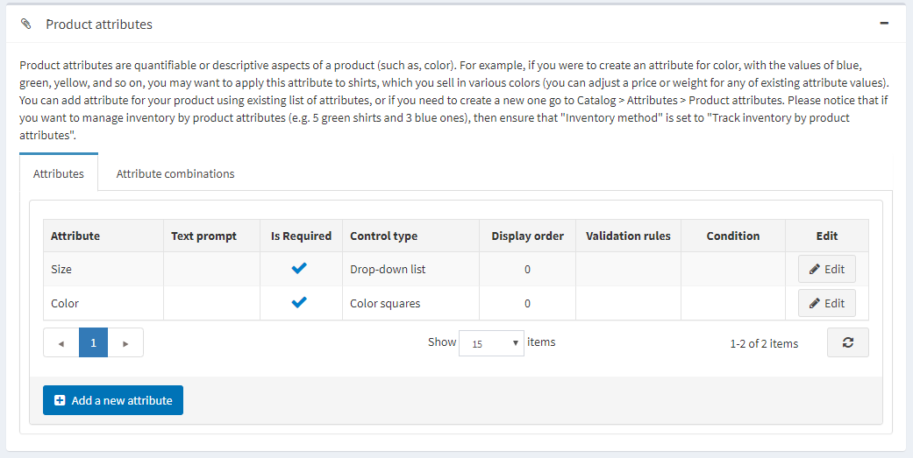
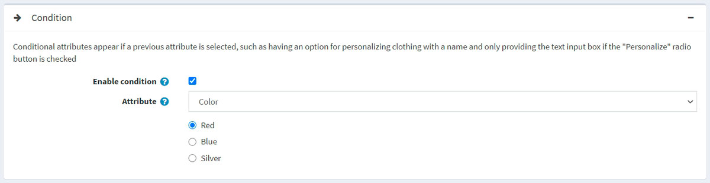
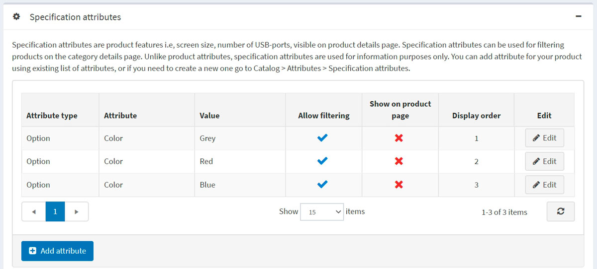
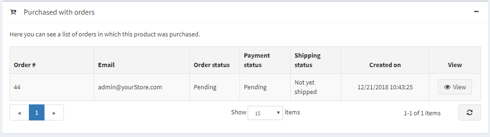

Add products
Setting up products in the best way possible is crucial for a store. Make sure to miss no detail, such as displaying various size and color options, giving thorough product descriptions, adding appealing pictures.
To add a new product, go to Catalog → Products. Click Add new button in the top right corner.

Note
You can import products from an external file by clicking the Import button. Once you have a list of products, you can export it to an external file for backup purposes, by clicking the Export button. After clicking the Export button, you will see the dropdown menu enabling you to Export to XML (all found) or Export to XML (selected) and Export to Excel (all found) or Export to Excel (selected). Additionally, it is possible to Download catalog as PDF to print the selected products into a PDF file. To remove products from the list, select the items to be deleted and click the Delete (selected) button.
The Add a new product page is available in two modes: advanced and basic (advanced mode by default). You can switch to the basic mode, which only displays the required fields.

You can also set up the basic mode to choose which fields you want to be required. To do this, click the Settings button beside the switch. The Setting pop-up window will be displayed as follows:

Select the fields needed and click Save. Note that the page will be refreshed in this case.
Product info
Start by filling in general information in the Product info panel:
Enter the Product name.
Enter the product's Short description that will be displayed in the catalog.
Enter the product's Full description that will be shown on the product details page. Here, you can add text, bullet points, links or additional images. Make sure to write a detailed description, as it affects your buyers' decision-making.
Enter the product SKU. This is the product stock-keeping unit used internally for tracking the product. This is your unique internal ID used to track this product.
Categories. You can assign a product to as many categories as you want. You can manage product categories in Catalog → Categories.
Manufacturers. You can assign a product to as many manufacturers as you want. You can manage manufacturers in Catalog → Manufacturers.
Select Published to make the product visible in your store.
Enter the Product tags — keywords for product identification. Enter the tags, separating them by commas. The more products are associated with a particular tag, the larger it will look in the Popular tags cloud displayed on the sidebar of the catalog page. Read more about how to manage product tags in the Product tags section.

Enter the GTIN (global trade item number). These identifiers include UPC (in North America), EAN (in Europe), JAN (in Japan), and ISBN (for Books).
Enter the Manufacturer part number. It's a part number provided for the product by the manufacturer.
Select the Show on homepage checkbox to display this product on your store's home page. Recommended for your most popular products. If this checkbox is selected, the store owner can also specify the Display order of the product. 1 represents the top of the list.
Set up the Product type as Simple or Grouped. Read more about product types in the Grouped products (variants) chapter.
The Product template field is visible if you have custom product templates installed on the System → Templates page.
Select Visible individually if you want the product to be in the catalog or search results; otherwise, the product will be hidden in the catalog and only accessible from a grouped product details page.
Choose Customer roles that will be able to see the product in the catalog. Leave this field empty if this option is not required and the product can be seen by everyone.
Note
In order to use this functionality, you have to disable the following setting: Configuration → Catalog settings → Ignore ACL rules (sitewide). Read more about the access control list here.
Choose the stores in the Limited to stores field if the product is sold in specific stores. Leave the field empty in case this functionality is not required.
Note
In order to use this functionality, you have to disable the following setting: Catalog settings → Ignore "limit per store" rules (sitewide). Read more about multi-store functionality here.
Vendor. You can manage vendors in Customers → Vendors.
Require other products is to define whether the product requires other products. In case it does, select the Required product IDs, entering them separated by commas, and ensure that there are no circular references, for example, A requires B, B requires A. Choose to Automatically add these products to the cart if required.
Select Allow customer reviews to enable customers to review this product.
Define the Available start date and/or Available end date of the product availability.
Select Mark as new to mark the product as recently added. This way, you can manage a list of products displayed on the "New products" page. You can also specify a period during which this product will be marked as new using the Mark as new. Start date and Mark as new. End date fields.
In the Admin comment field, enter a comment for information purposes. This comment will be for internal use only, not visible to customers.
Price
In the Price panel, define:
Price in a predefined currency.
Note
You can change the store currency in Configuration → Currencies. Read more about currencies here.
Old price. If it is larger than zero, it becomes visible in the public store and displayed beside the new price for comparison.
Product cost, the sum of all costs associated with the production of the product or service. This is not displayed to customers.
Disable buy button. This can be useful for products "upon request."
Disable wishlist button.
Available for pre-order if the product is not in the store yet, but you want to allow customers to order it. The Pre-order button will be displayed to replace the standard Add to cart button in the public store. When this option is selected, the Pre-order availability start date field will be displayed. Enter the availability start date of the product in UTC. The Pre-order button will be changed to Add to cart when this date comes.
Call for price to show Call for pricing or Call for quote instead of the price on the product details page in the public store. This can help you establish contact with your customers and give additional information about the product they are interested in.
Customer enters price to indicate that a customer must enter the price. When selected, the following fields will be displayed:
- In the Minimum amount field, enter the minimum amount for the price.
- In the Maximum amount field, enter the maximum amount for the price.
PAngV (base price) enabled if the product has a base price. This is required according to German law (PAngV). For example, if you sell 500 mL of beer for €1.50, you have to show the base price: €3.00 per 1 L. When selected, the following fields will be displayed:
- Amount in product — the amount of the product being sold.
- Unit of product — the measure of the previously entered value.
- Reference amount — the base amount.
- Reference unit — the measure of the previously entered value.
Discounts. Learn how to set up discounts here.
Note
If you want to use discounts, make sure the Ignore discounts (sitewide) setting is disabled in the Configuration → Settings → Catalog settings → Performance panel.
Whether the product is exempted from tax by selecting Tax exempt. Otherwise, from the Tax category dropdown list, select the required tax classification for this product. Tax categories can be configured by the store owner in the Configuration → Tax → Tax categories.
The product as Telecommunications, broadcasting, and electronic services to apply special tax rules used in the European Union.
Set up tier prices if required.
Shipping
Define product-specific shipping details in the Shipping panel:
Select Shipping enabled if the product can be shipped. The section will expand for more details.
Set the product parameters that will be used for the shipping calculation: Weight, Length, Width, Height.
Note
You can change predefined measures in Configuration → Shipping → Measures.
Free shipping, if any.
Ship separately if the product should be shipped separately from other products. If the order includes several items of the product, all of them will be shipped separately.
Additional shipping charge.
Delivery date that will be displayed in the public store.
Note
You can manage delivery date options in Configuration → Shipping → Delivery dates.
Note
There is the Estimate shipping enabled (product page) setting, which can be enabled in Configuration → Settings → Shipping settings. This setting allows displaying estimated shipping information based on the customer's shipping address in a pop-up window on the product details page.
Inventory
Define the inventory settings for the product as described here.
Multimedia
On this panel you can add all media content related to the current product.
Pictures
In the Pictures panel, you can add the product pictures.
You can upload multiple image files at once using the Upload files button. After the pictures are uploaded, you can set the following values for each of them:
- In the Alt field, enter a value for the "alt" attribute of the "img" HTML element. If empty, the default rule will be used (for example, product name).
- In the Title field, enter a value for the "title" attribute of the "img" HTML element. If empty, the default rule will be used (for example, product name).
- Define the Display order of the image on the product page. 1 represents the top of the list.
Note
To upload pictures in *.svg format you will need to activate the following setting
Videos
On the "Video" tab, you can add links to embedded videos from any video hosts such as YouTube or Vimeo.
Product attributes
In the Product attributes panel, you can add product attributes. Learn more about product attributes and how to create them here.

Add a new attribute
Once you have a list of the attributes created, click Add a new attribute in the Attributes tab. The Add a new attribute window will be displayed as follows:

Set up a new attribute:
From the Attribute dropdown list, select an attribute.
Fill the Text prompt field if you want some text to be shown in front of this attribute in the public store.
Select Is required to set this attribute as required for customers.
Define the Control type for this attribute (for example, dropdown list, radio button list).
Note
For the "Date picker" control type, it is possible to set a number of years to be displayed by using catalogsettings.countdisplayedyearsdatepicker parameter on the All settings (advanced) page. For example, if you set zero, then only the current year will be displayed. If you set 5, then the current year and the next 5 years will be displayed. Read about how to set this up on the All settings page.
Define the Display order of the attribute on a product page. 1 represents the top of the list.
Click Save and continue edit. The Values panel now displays the predefined values for this attribute. Click Edit in the value row if required.
Edit an attribute value

Edit the attribute value details as follows:
- Select the Attribute value type. There are two attribute value types, Simple and Associated to product. Choose the Associated to product type if you want this attribute value to be another product from your catalog and track its stock as well. Here, you can use bundled products functionality allowing customers to buy various combinations or sets of products as a single product, and shoppers would have an opportunity to set the required quantity of the attributes using the Customer enters quantity field described below.
If the previous setting is Associated to product, the following fields will be displayed:
- Associated product allows you to choose the product associated to this attribute. Use the Associate a product button to choose a product.
Note
Make sure there is no warning after you've chosen the associated product. Such as:

- Select the Customer enters quantity field to allow a customer to enter the quantity of the attribute (which represents the associated product).
- If the previous field is clear, you can specify the Product quantity. The minimum allowed value is 1.
- Enter the Name of the attribute.
- Specify the RGB color to be used with the color squares attribute control.
- In the Price adjustment field, enter the price applied when choosing this attribute value. For example, '10' to add 10 dollars. Or 10% if Price adjustment. Use percentage is selected.
- Select Price adjustment. Use percentage, which determines whether to apply a percentage to the product. If not enabled, a fixed value is used.
- Use the Weight adjustment field to specify the weight adjustment applied when choosing this attribute value.
- Specify the Cost field. The attribute value cost is the cost of all components that make up this value. This may be either the purchase price if the components are bought from third-party suppliers or the combined cost of materials and manufacturing processes if the component is made in-house.
- Select the Is pre-selected field if this attribute value should be preselected for the customer.
- Enter the Display order of the attribute value. 1 represents the first item in the attribute value list.
- Choose a Picture associated to this attribute value. This picture will replace the main product image when this product attribute value is clicked (selected).
Click Save.
Attribute conditions
If required, define conditions for this attribute in the Condition panel. Conditional attributes appear if a previous attribute is selected, such as having an option for personalizing clothing with a name and only providing the text input box if the "Personalize" radio button is selected.

- Select the Enable condition checkbox to enable the condition.
- Select the Attribute and its value. When the value is selected, the condition will be fulfilled and the attribute will be displayed.
Attribute combinations
In the Attribute combinations tab, define various attribute combinations and the following information for each of them:
Click the Add combination button to select a new combination and enter its details:
For each combination, define:
- The attributes within the combination.
- The current Stock quantity of this combination.
- If you have enabled 'Manage stock by attributes' on the product details page, you can perform a number of actions when the current stock quantity falls below (reaches) the Minimum stock quantity (for example, Low stock report).
- Allow out of stock if you want to allow your customers to purchase a product with certain attributes when out of stock.
- SKU.
- Manufacturer part number.
- GTIN.
- Overridden price if the price for products with certain attributes is different from the regular product price. For example, you can give a discount this way. Leave empty to ignore the field.
Note
All other applied discounts will be ignored when this field is specified.
- In Notify admin for quantity below, enter the quantity below which the admin will be notified.
- Choose a Picture associated to this attribute combination. This picture will replace the main product image when this product attribute combination is selected.
Click Save.
Note
Note that some attribute control types that support custom user input (for example, file upload, textboxes, date picker) are useless with attribute combinations.
To generate all possible combinations, use the Generate all possible combinations button. Or use the Generate several combinations button to manually choose some attribute values to generate necessary combinations.
Specification attributes
Specification attributes are product features, such as screen size or number of USB ports, visible on a product details page. Specification attributes can be used for filtering products on the category details page. Read more about specification attributes here.
Note
Unlike product attributes, specification attributes are used for information only.

In the Specification attributes panel, add specification attributes.
Note
You can add an attribute for your product using the existing list of attributes, or, if you need to create a new one, go to Catalog → Attributes → Specification attributes.
To add a new attribute, click the Add attribute button and fill the Add a new product specification attribute section:

- Select the Attribute type from the dropdown list.
- Choose the Attribute from the list of the precreated attributes.
- Choose the Attribute option.
- Allow filtering by this option on a category page if required.
- Select Show on product page to make the attribute visible on a product page.
- Set the attribute Display order. 1 represents the top of the list.
Click Save.
Product class
Define whether the product is a
SEO
Define the following SEO parameters for the product page:
- Search engine friendly page name — the page name used by search engines. If you enter nothing, then the product page URL will be formed using the product name. If you enter custom-seo-page-name, then the following custom URL will be used:
http://www.yourStore.com/custom-seo-page-name. - Meta title — a title for the web page.
- Meta keywords — a brief and concise list of the most important themes (keywords and key phrases) related to the product. These words will be added to the product page header.
- Meta description — a brief description of the product that will be added to the product page header.
Read more about SEO here.
Related products and cross-sells
Set up related products and cross-sells as described here.
Purchased with orders
To view a list of orders in which the product was purchased, go to the Purchased with orders panel. Here, you can check an order's status and view an order in detail.

Stock quantity history
In this tab, you can view all the product quantity changes, orders with the product.

Setting up a product page
The following sections describe product page settings: Product fields, Product page, and Share.